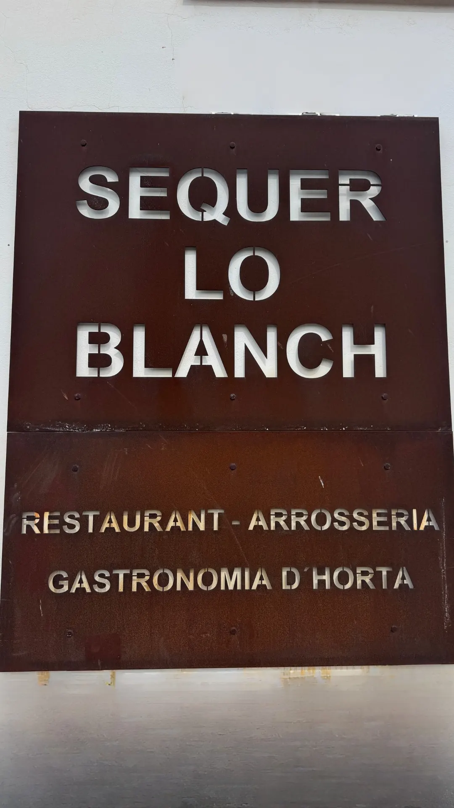

Visítanos
En plena huerta, con parking privado
Camí Fondo, 23, 46120 Alboraia. Rodeados de acequias y plantaciones, y a un paso de Valencia.

Parking
Aparca dentro, sin dar vueltas
Parking privado en el propio recinto, de fácil acceso.
PendienteParking: nº de plazas, si es gratuito, si caben autocares · foto del aparcamiento
Horario
- Almuerzos a la brasaDe lunes a sábado09:00–12:00
- ComidasTodos los días menos martes13:00–16:00